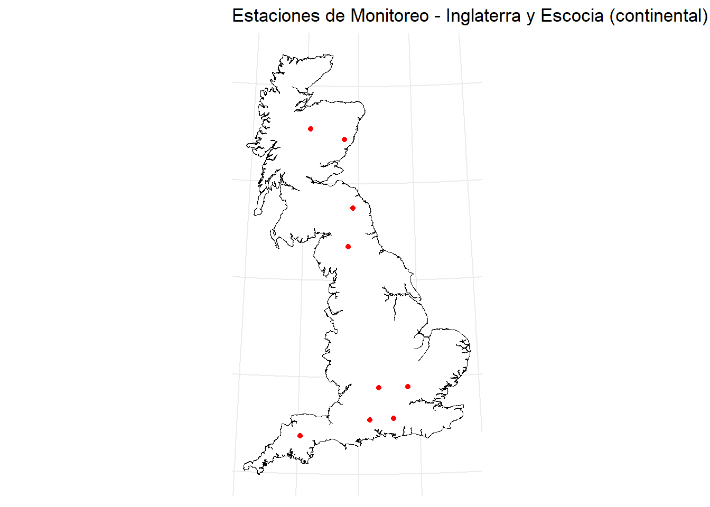
Análisis espacial de datos funcionales del albedo del cielo y la radiación solar neta en Inglaterra y Escocia
Planteamiento del problema
La modelación del comportamiento de variables ambientales que varían tanto en el espacio como en el tiempo es fundamental para entender los patrones subyacentes en fenómenos naturales complejos. En particular, el albedo del cielo, entendido como el promedio de la fracción de radiación reflejada por la atmósfera, tiene una relación directa con variables radiativas como la radiación solar neta, y ambas influyen significativamente en el balance energético de la superficie terrestre. Estas variables no solo se comportan de manera dinámica a lo largo del día, sino que también presentan dependencia espacial en diferentes regiones geográficas.
En este trabajo se aborda el análisis conjunto del albedo del cielo y la radiación solar neta registrados durante el año 2015 en diversas estaciones meteorológicas del Reino Unido, particularmente en Inglaterra y Escocia, como parte del Environmental Change Network (ECN). Debido a su naturaleza funcional (es decir, observaciones continuas a lo largo del tiempo para cada sitio), se propone utilizar técnicas de análisis de datos funcionales para representar adecuadamente la evolución diaria de cada variable en cada estación.
Además, se busca aplicar métodos de cokriging funcional para modelar la estructura de dependencia espacial residual del albedo del cielo, apoyándose en la información contenida en la radiación neta. En lugar de predecir directamente los valores funcionales de las variables, el interés se centra en estimar los residuos funcionales (es decir, las desviaciones respecto al comportamiento global), lo cual permite identificar zonas con comportamientos atípicos o diferenciales frente al patrón promedio.
Este enfoque permitirá comprender mejor la variabilidad local del albedo atmosférico y su relación con la radiación, proporcionando herramientas útiles para estudios climatológicos, energéticos o de modelación ecológica en regiones específicas del Reino Unido.
Objetivos
Objetivo general
- Aplicar técnicas de análisis de datos funcionales y cokriging funcional para modelar la variabilidad residual espacial del albedo del cielo en estaciones meteorológicas del Reino Unido durante el año 2015, utilizando como variable auxiliar la radiación solar neta.
Objetivos específicos
Representar la evolución diaria del albedo del cielo y de la radiación solar neta mediante técnicas de suavizamiento funcional por sitio de monitoreo.
Estimar la tendencia funcional general del albedo del cielo y calcular los residuos funcionales respecto a dicha tendencia.
Analizar la estructura de dependencia espacial de los residuos funcionales mediante semivariogramas cruzados y modelos de coregionalización.
Ajustar un modelo de cokriging funcional para predecir los residuos del albedo del cielo en ubicaciones no observadas.
Evaluar la calidad de las predicciones obtenidas y explorar la interpretación de los resultados en el contexto geográfico y climático de Inglaterra y Escocia.
Variables
Este análisis se basa en datos meteorológicos registrados por el Environmental Change Network (ECN) del Reino Unido, correspondientes al mes de marzo del año 2015. Las observaciones se tomaron diariamente a las 12:00 del mediodía, en un total de nueve estaciones de monitoreo distribuidas en Inglaterra y Escocia. A continuación, se describen las variables utilizadas:
Albedo del cielo (promedio, W/m²): Es la variable de interés principal. Representa el promedio horario de la fracción de radiación solar reflejada por la atmósfera hacia el suelo. Aunque aparece expresada en unidades de W/m², operativamente se interpreta como un indicador de reflectancia atmosférica, estrechamente relacionada con la cobertura nubosa o condiciones del cielo. Se trata como una variable funcional, es decir, una función continua del tiempo durante el mes.
Radiación solar neta (promedio, W/m²): Variable auxiliar para el análisis conjunto mediante cokriging funcional. Refleja el balance de radiación (entrante menos saliente) y representa la energía neta absorbida en superficie. También es una variable funcional, registrada como promedio horario a las 12:00 p.m. cada día.
Además, se consideraron variables adicionales esenciales para el análisis geoestadístico:
Fecha: Día específico de medición. Para este estudio se usaron los datos del mes de marzo de 2015, con registros diarios a mediodía.
Estación de monitoreo: Identificador del sitio geográfico de medición. Se incluyeron nueve estaciones, ubicadas tanto en Inglaterra como en Escocia.
Coordenada Este y Coordenada Norte: Posiciones geográficas de cada estación, expresadas en metros de acuerdo con el sistema de referencia espacial británico (British National Grid). Estas coordenadas permiten representar la estructura espacial de los datos y calcular distancias entre estaciones.
Estas variables permiten la construcción de curvas funcionales por estación, el análisis exploratorio inicial y la implementación del modelo geoestadístico funcional bivariado para estimar la variabilidad espacial del albedo del cielo.
ANÁLISIS DEL ALBEDO DEL CIELO COMO DATOS FUNCIONALES
Para este estudio, el albedo del cielo se consideró como una variable que evoluciona a lo largo del tiempo, específicamente durante el mes de marzo de 2015. Aunque las mediciones originales son valores discretos —un dato por día a las 12:00 del mediodía en cada estación—, el objetivo de este análisis es modelarlas como funciones continuas, es decir, tratarlas como datos funcionales. Esta aproximación permite capturar mejor la variabilidad diaria y aplicar técnicas estadísticas diseñadas para curvas, como el cokriging funcional.
Dado que los datos iniciales no están en formato funcional, fue necesario realizar un proceso de suavizado para transformarlos en funciones. Para ello, se utilizó una base de funciones B-spline de orden adecuado, definida sobre el rango temporal de interés (los días del mes). En este caso, se eligió una base con 8 funciones base, una cantidad que permite representar adecuadamente las principales características de las curvas sin sobreajustar a pequeñas fluctuaciones espurias.
Posteriormente, para cada estación se realizó un ajuste individual utilizando el método de suavizado por mínimos cuadrados penalizados, a través del cual se generaron las representaciones funcionales tanto para la radiación solar neta como para el albedo del cielo. Este proceso permitió obtener una curva continua por estación para cada variable.
Finalmente, las funciones estimadas para todas las estaciones fueron integradas en objetos funcionales multivariados, lo cual facilita su análisis conjunto en etapas posteriores. Con esto, las variables quedan representadas como funciones en el dominio temporal, lo que habilita su uso en el análisis funcional geoestadístico que se desarrollará en las siguientes secciones.
ANÁLISIS DESCRIPTIVO Y EXPLORATORIO
Como primer paso del análisis descriptivo, se graficaron las curvas suavizadas para cada estación de monitoreo correspondientes a las variables albedo del cielo y radiación solar neta, tratadas como funciones continuas a lo largo de los 31 días del mes de marzo de 2015. El eje X representa el tiempo en días, y el eje Y muestra los valores de cada variable en sus respectivas unidades (W/m²).
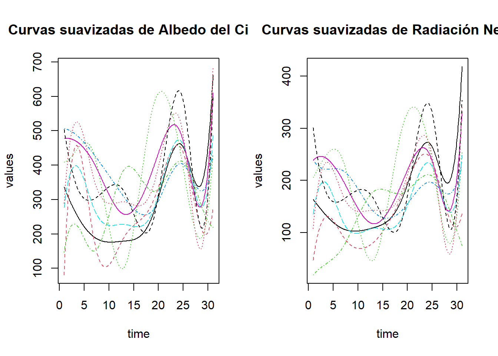
Ambas variables muestran un comportamiento gráfico muy similar. Durante la primera mitad del mes, las curvas se comportan de manera altamente variable, sin una forma definida ni una tendencia común clara entre estaciones: algunas presentan valores altos, otras bajos, lo que refleja condiciones locales diversas como nubosidad, cobertura atmosférica o variabilidad en la radiación. Sin embargo, a partir del día 20 aproximadamente, en ambas variables se observa un patrón compartido: las curvas comienzan a alinearse, formando una especie de “montañita” entre los días 20 y 25, seguida de un descenso pronunciado alrededor del día 28, y un repunte final entre los días 30 y 31. Esta coincidencia sugiere la presencia de fenómenos meteorológicos regionales que afectaron simultáneamente a todas las estaciones, como una ventana de cielo despejado seguida de nubosidad y luego mayor insolación hacia el final del mes.
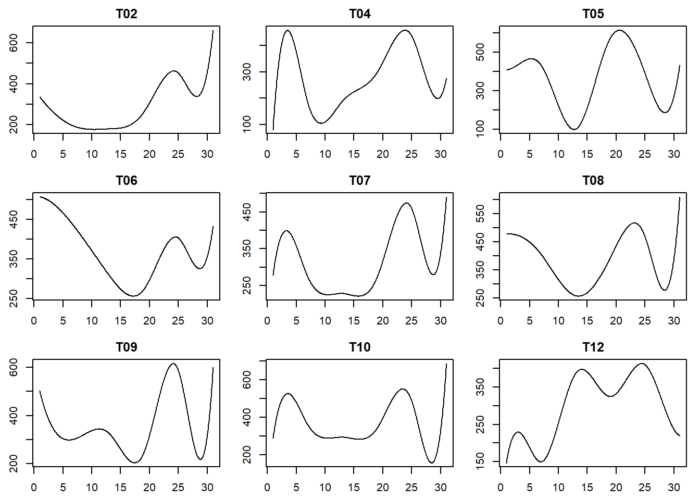
En la Figura se presentan las curvas correspondientes a la evolución diaria de una variable continua (no especificada) durante un mes, para diferentes regiones o estaciones (T02, T04, T05, …, T12). El eje horizontal representa los días del mes (de 1 a 31), mientras que el eje vertical muestra los valores de la variable medida.
En general, se observa una fuerte variabilidad temporal dentro del mes, con patrones no lineales evidentes en casi todas las estaciones. Algunas curvas presentan un comportamiento suave y unimodal, como es el caso de T06, donde se aprecia un descenso inicial seguido de una recuperación hacia el final del mes. Otras estaciones muestran patrones bimodales más marcados, como T04, T05, T09 y T12, con dos picos de mayor valor separados por un valle a mitad del mes. En varios casos, los valores aumentan notoriamente hacia el final del periodo (por ejemplo, T08 y T07), lo que sugiere una posible tendencia creciente al cierre del mes.
Es destacable que no todas las estaciones siguen un mismo patrón, lo cual sugiere heterogeneidad espacial en el comportamiento de la variable. Esta variabilidad podría estar asociada a factores locales (climáticos, geográficos o de cobertura).
Análisis de la curva media funcional y variabilidad
Posteriormente, se graficaron las curvas funcionales suavizadas de todas las estaciones junto con la curva media funcional para cada variable. En ambas variables —albedo del cielo y radiación neta— se observa que la curva media logra capturar apropiadamente el comportamiento general de las estaciones, especialmente en la segunda mitad del mes, donde las trayectorias tienden a alinearse más claramente con la media. No obstante, en los primeros días del mes, las curvas individuales presentan una alta dispersión alrededor de la media, lo que refleja una mayor heterogeneidad en las condiciones atmosféricas registradas en las distintas estaciones.
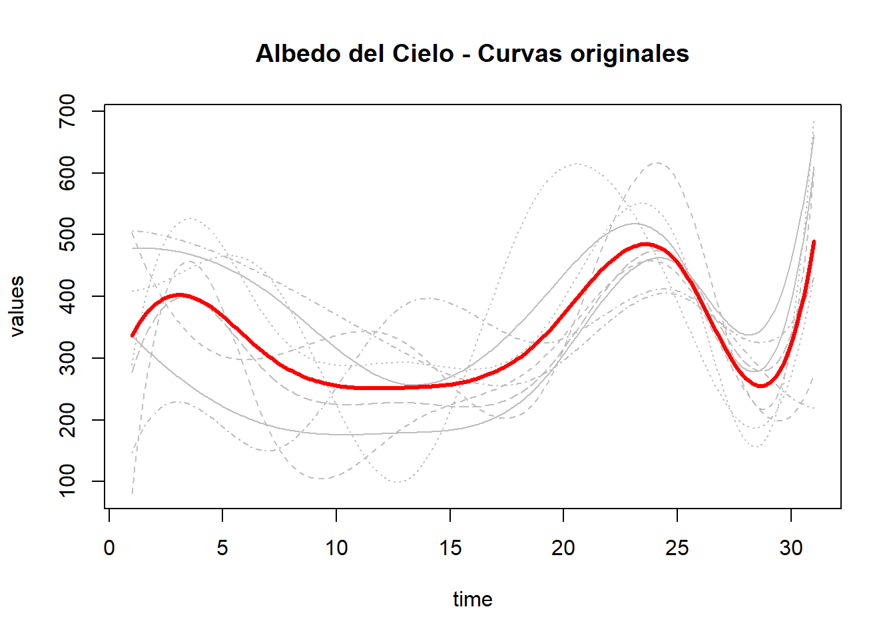
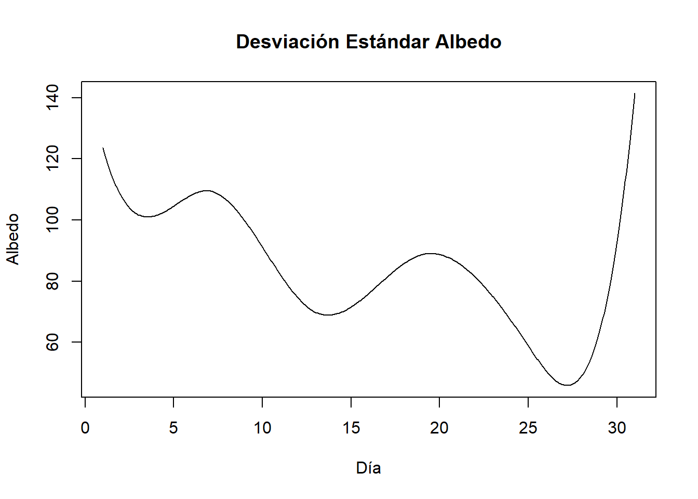
Este patrón también se refleja en los gráficos de desviación estándar funcional. Para el albedo del cielo, se observa una alta variabilidad en los primeros días, con valores de desviación estándar cercanos a 120 W/m², lo que indica diferencias significativas entre estaciones. Conforme avanza el mes, la desviación estándar disminuye de manera progresiva, alcanzando su punto más bajo alrededor del día 27, con un valor cercano a 45 W/m². No obstante, en los últimos días del mes, la desviación vuelve a incrementarse drásticamente, lo que sugiere nuevamente una mayor inestabilidad atmosférica o condiciones divergentes entre los sitios monitoreados.
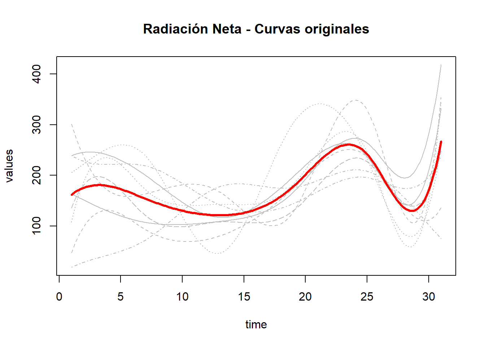
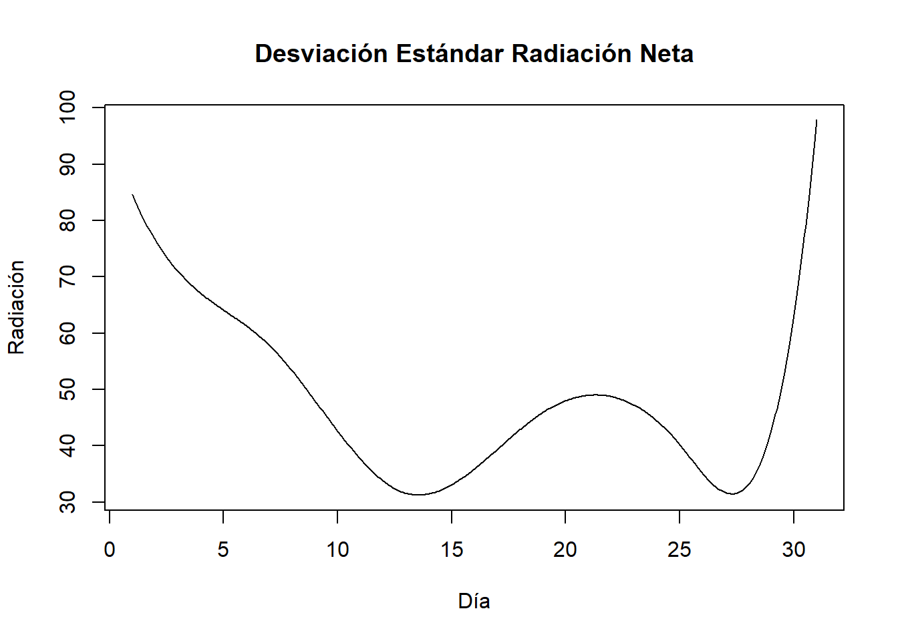
En el caso de la radiación neta, el comportamiento es muy similar. La variabilidad inicial es alta, comenzando con una desviación estándar cercana a 80 W/m², que disminuye hasta aproximadamente 30 W/m² hacia los días 13 o 14. Luego, la desviación estándar experimenta un leve incremento hacia los días 20 a 25, llegando a valores de aproximadamente 40 W/m², seguido por una nueva caída hacia los días 26 y 27. Sin embargo, al igual que con el albedo del cielo, los últimos días del mes muestran un fuerte aumento en la variabilidad, alcanzando una desviación estándar cercana a 100 W/m². Esta dinámica confirma que las condiciones de radiación en las estaciones fueron más estables a mitad de mes, mientras que los extremos del mes (inicio y fin) concentran los mayores niveles de incertidumbre o dispersión en ambas variables.
Centrado de curvas funcionales
Con el fin de extraer la tendencia general y analizar adecuadamente los residuos funcionales, se centraron las curvas de ambas variables restando la media funcional a cada una de ellas.
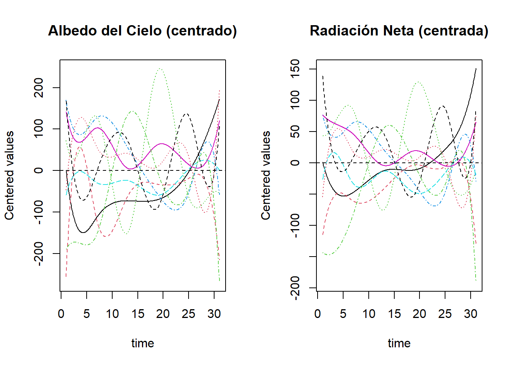
Al graficar las nuevas curvas centradas, se observa que, aunque conservan una alta variabilidad y dispersión entre estaciones, ahora oscilan alrededor de cero, tal como se espera tras este procedimiento. En el caso del albedo del cielo, los valores centrados fluctúan entre aproximadamente -200 y 200 W/m², mientras que para la radiación neta se ubican entre -150 y 150 W/m², manteniendo formas irregulares que reflejan la complejidad de su comportamiento diario.
Correlación funcional cruzada
Para evaluar la relación temporal entre las curvas del albedo del cielo y la radiación neta, se construyó un gráfico de imagen tipo mapa de calor que representa la correlación funcional cruzada entre ambas variables evaluadas sobre una grilla común de tiempo. En este gráfico, los ejes representan los días del mes de marzo para cada variable, y los colores indican el nivel de correlación entre los valores correspondientes de albedo y radiación.
Se observa una fuerte correlación positiva en la diagonal principal del gráfico, con valores entre 0.8 y 1, lo que indica que ambas variables están altamente relacionadas cuando se comparan en los mismos días. Este patrón sugiere una conexión directa entre la radiación neta recibida y la respuesta del albedo del cielo en esos momentos. Fuera de la diagonal, la correlación disminuye, presentando valores que oscilan entre 0.4 y 0.6, lo cual es esperable, dado que representa la relación entre días no coincidentes en el tiempo.
Este resultado respalda el uso conjunto de ambas variables en un análisis de cokriging funcional, ya que evidencia una dependencia temporal significativa entre ellas.
CÁLCULO DE SEMIVARIOGRÁMAS FUNCIONALES EMPÍRICOS
Semivariogramas funcionales individuales
Para caracterizar la dependencia espacial de las variables funcionales consideradas —el albedo del cielo y la radiación neta—, se calcularon sus respectivos semivariogramas funcionales empíricos.
A diferencia del semivariograma tradicional, que se basa en la diferencia puntual entre observaciones escalares, el semivariograma funcional empírico se construye a partir de la distancia entre funciones observadas completas. En este caso, se utiliza la norma \(L^2\) como medida de disimilitud entre curvas suavizadas.
Para dos ubicaciones espaciales \(s_i\) y \(s_j\), con funciones observadas \(X_i(t)\) y \(X_j(t)\), el semivariograma funcional empírico para un rezago \(h\) se define como:
\[ \hat{\gamma}(h) = \frac{1}{2|N(h)|} \sum_{(i,j) \in N(h)} \left\| X_i(t) - X_j(t) \right\|_{L^2}^2 \]
donde:
- \(N(h)\) es el conjunto de pares de ubicaciones cuya distancia está dentro del intervalo correspondiente al rezago \(h\),
- \(\| \cdot \|_{L^2}\) es la norma \(L^2\), definida como: \[ \left\| X_i(t) - X_j(t) \right\|_{L^2} = \left( \int_{T} \left[ X_i(t) - X_j(t) \right]^2 dt \right)^{1/2} \]
Se calcularon los semivariogramas funcionales empíricos para las variables albedo del cielo y radiación neta, con el fin de explorar su estructura de dependencia espacial. En ambos casos, no se presentan valores observados para los rezagos más pequeños debido a la escasa cantidad de pares de estaciones cercanas, lo cual es esperable considerando la limitada densidad espacial de estaciones.
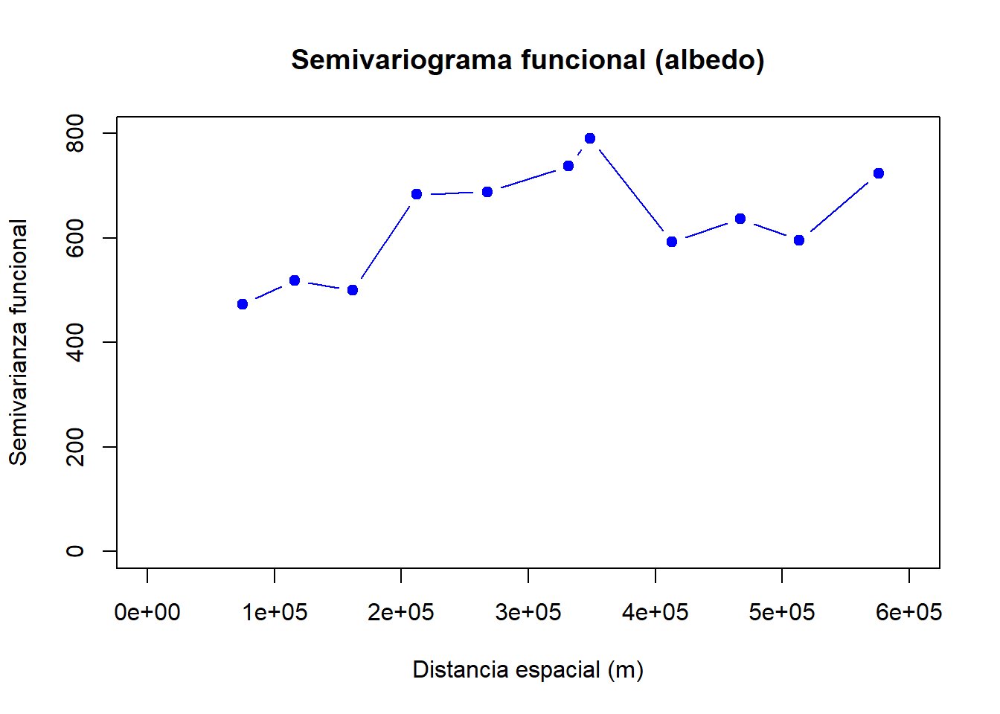
Para el albedo del cielo, el semivariograma comienza a ser observable a partir de distancias cercanas a los 100.000 metros, donde la semivarianza alcanza un valor aproximado de 500. Posteriormente, entre los 200.000 y 350.000 metros, se observa un ligero aumento y luego una estabilización en los valores, lo cual indica que a partir de los 200.000 metros la dependencia espacial comienza a debilitarse, y se alcanza una especie de meseta, lo que sugiere la presencia de una correlación espacial de mediano alcance.
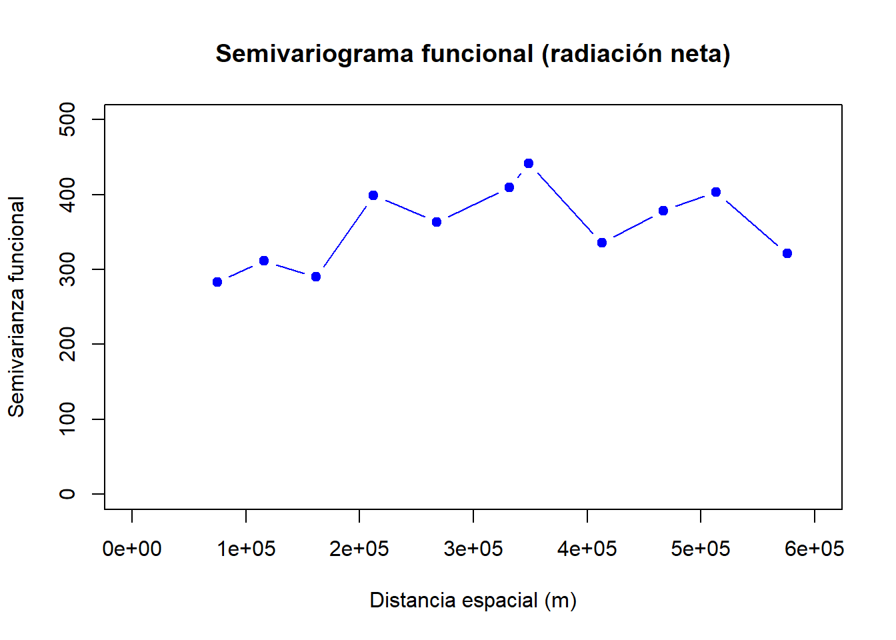
En el caso de la radiación neta, el comportamiento es similar: se observa un aumento de la semivarianza con la distancia, alcanzando aproximadamente 300 en los primeros rezagos visibles (alrededor de los 100.000 metros). A partir de ahí, la semivarianza sigue una oscilación suave y también tiende a estabilizarse hacia los 200.000 metros, lo que sugiere un patrón espacial comparable al del albedo del cielo.
Este comportamiento indica que, en ambos casos, las estaciones relativamente cercanas tienden a tener valores similares de las variables, mientras que a mayores distancias, la dependencia espacial se reduce. Esto es coherente con fenómenos meteorológicos y atmosféricos que actúan a escalas regionales, y respalda el uso de modelos de geoestadística funcional para capturar dicha estructura.
Semivariograma funcional cruzado
Además de analizar las estructuras espaciales de dependencia de las variables por separado, es de particular interés estudiar la relación espacial conjunta entre el albedo del cielo y la radiación neta. Para ello, se calculó el semivariograma cruzado funcional empírico, el cual permite medir la disimilitud funcional entre dos variables diferentes observadas en distintas ubicaciones, en función de la distancia espacial.
Este semivariograma se define, para un rezago \(h\), como:
\[ \hat{\gamma}_{12}(h) = \frac{1}{2|N(h)|} \sum_{(i,j) \in N(h)} \left\langle X_i^{(1)}(t) - X_j^{(1)}(t),\ X_i^{(2)}(t) - X_j^{(2)}(t) \right\rangle_{L^2} \]
donde:
- \(X^{(1)}_i(t)\) y \(X^{(2)}_i(t)\) representan las funciones observadas en la ubicación \(i\) para la radiación neta y el albedo del cielo, respectivamente.
- \(\left\langle f, g \right\rangle_{L^2}\) denota el producto interno funcional: \[ \left\langle f,\ g \right\rangle_{L^2} = \int_T f(t)\ g(t)\ dt \]
- \(N(h)\) es el conjunto de pares de ubicaciones cuya distancia está dentro del intervalo asociado al rezago \(h\).
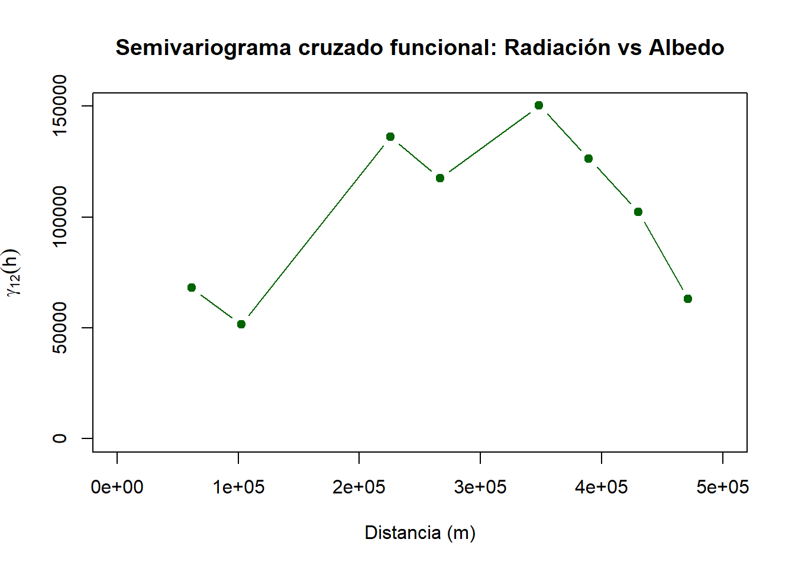
El gráfico resultante del semivariograma cruzado funcional muestra que, en los primeros rezagos (menores a aproximadamente 50.000 metros), no se presentan observaciones debido a la escasez de pares espaciales a distancias tan cortas. Sin embargo, tal como se espera, la semivarianza cruzada tiende a ser baja en estas distancias por la alta similitud entre funciones cercanas.
A medida que la distancia aumenta, la semivarianza cruzada incrementa también, alcanzando un comportamiento que tiende a estabilizarse alrededor de los 200.000 metros. En esta zona, las diferencias conjuntas entre ambas variables funcionales tienden a permanecer constantes, lo cual sugiere una correlación estructural moderadamente estable a esa escala espacial. A partir de los 350.000 metros, la semivarianza cruzada incluso muestra una leve disminución, lo que podría indicar cierta reversión de patrones conjuntos o limitaciones de pares a esas distancias extremas.
En general, este comportamiento refleja una relación funcional coherente entre las dos variables: estaciones más cercanas tienden a compartir patrones similares tanto en albedo del cielo como en radiación neta, y esta relación pierde fuerza a medida que se incrementa la distancia espacial.
AJUSTE DE MODELOS TEÓRICOS PARA LOS SEMIVARIOGRAMAS FUNCIONALES
Una vez obtenidos los semivariogramas funcionales empíricos —tanto individuales para cada variable como el cruzado—, se procedió al ajuste de diferentes modelos teóricos con el fin de representar adecuadamente la estructura de dependencia espacial de los datos funcionales. Para cada uno de los semivariogramas, se probaron cuatro tipos de modelos: exponencial, gaussiano, wave (ondulatorio) y esférico.
El criterio utilizado para seleccionar el mejor modelo fue el Error Cuadrático Medio de la Raíz (RMSE) entre los valores empíricos del semivariograma y los valores ajustados por cada modelo. Este enfoque permitió identificar cuál de las funciones teóricas lograba un mejor ajuste al comportamiento observado de los datos.
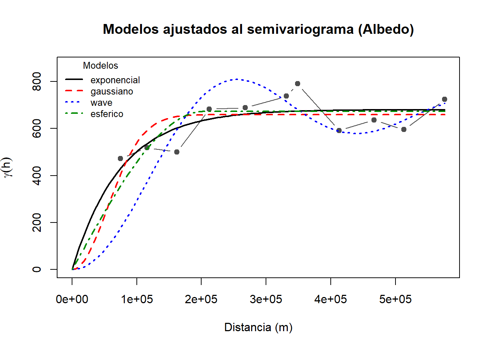
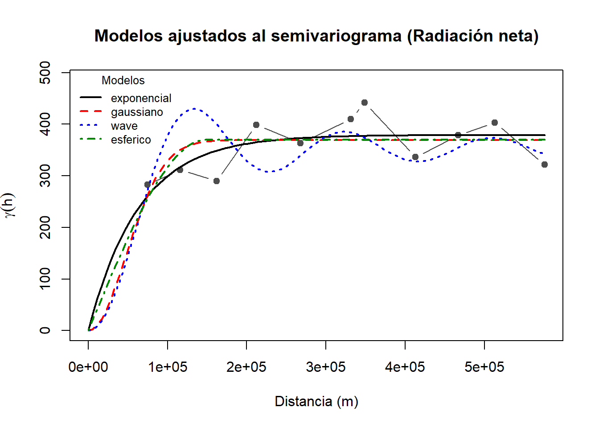
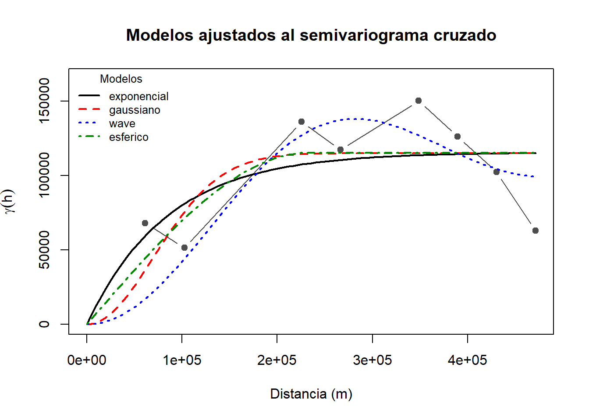
Para el semivariograma funcional del albedo del cielo, el modelo exponencial presentó el menor RMSE, por lo que fue seleccionado como el más adecuado para describir su estructura espacial.
De forma análoga, para el semivariograma funcional de la radiación neta, también el modelo exponencial ofreció el mejor desempeño en términos del error de ajuste.
En el caso del semivariograma cruzado funcional entre la radiación neta y el albedo del cielo, el modelo que mejor capturó la covariación espacial entre ambas variables fue el wave, reflejando posiblemente una interacción más compleja u oscilatoria entre estas magnitudes en el espacio.
En todos los casos, los modelos seleccionados lograron ajustarse visualmente de forma adecuada a los puntos observados en los semivariogramas empíricos, representando con fidelidad las tendencias espaciales presentes en los datos funcionales.
COKRIGING FUNCIONAL PARA LA PREDICCIÓN DEL ALBEDO DEL CIELO
Luego del ajuste de los modelos variográficos individuales y cruzado, se procedió a implementar el método de cokriging funcional con el objetivo de predecir el comportamiento funcional del albedo del cielo, apoyándose en la información adicional provista por la radiación neta.
Para ello, se utilizó una función propia que implementa el cokriging funcional en una ubicación específica \(h_0\), basándose en las distancias espaciales entre las estaciones y los modelos de covarianza teóricos previamente ajustados (exponencial para ambas variables individuales, y wave para el modelo cruzado).
El procedimiento seguido consistió en:
Evaluar las curvas funcionales suavizadas y centradas para ambas variables en una grilla temporal común (los 31 días del mes de marzo).
Calcular las matrices de covarianza entre las estaciones, de acuerdo con los modelos variográficos ajustados para cada variable y para el componente cruzado.
Construir la matriz de covarianza conjunta que incluye las relaciones entre las dos variables.
Calcular la covarianza entre la nueva ubicación \(h_0\) y las estaciones disponibles, para ambas variables.
Resolver el sistema lineal que permite obtener los pesos óptimos del cokriging.
Obtener la predicción funcional del albedo del cielo como una combinación ponderada de las curvas funcionales observadas de ambas variables.
Los parámetros utilizados fueron:
Para el albedo del cielo: silla = 680.6, rango = 74,831.4
Para la radiación neta: silla = 379.1, rango = 64,092.3
Para el componente cruzado: sill = 113,525, rango = 62,768
Este procedimiento permite incorporar no solo la información espacial y funcional del albedo del cielo, sino también la estructura conjunta de dependencia con la radiación neta, mejorando así la precisión de las predicciones.
Análisis Espacio-Temporal de los Residuos mediante coKriging Funcional
El objetivo principal de este análisis no es predecir el albedo del cielo en ubicaciones específicas, sino comprender su variabilidad funcional respecto a la media global. Para ello, se empleó el cokriging funcional utilizando la radiación solar neta como variable auxiliar, y se realizaron predicciones espaciales sobre los residuos funcionales del albedo.
Se construyeron mapas predichos para los días 5, 10, 15, 20, 25 y 30 del mes, sobre el área continental de Inglaterra y Escocia. En estos mapas, cada punto representa la magnitud del residuo funcional, es decir, cuánto se desvía el albedo en esa ubicación con respecto al comportamiento promedio global (la media funcional). Los colores oscuros (negros, morados, azules) indican residuos negativos —zonas con albedo inferior al promedio—, mientras que los colores claros (rojo, rosado, blanco) indican residuos positivos —zonas con albedo superior al promedio.
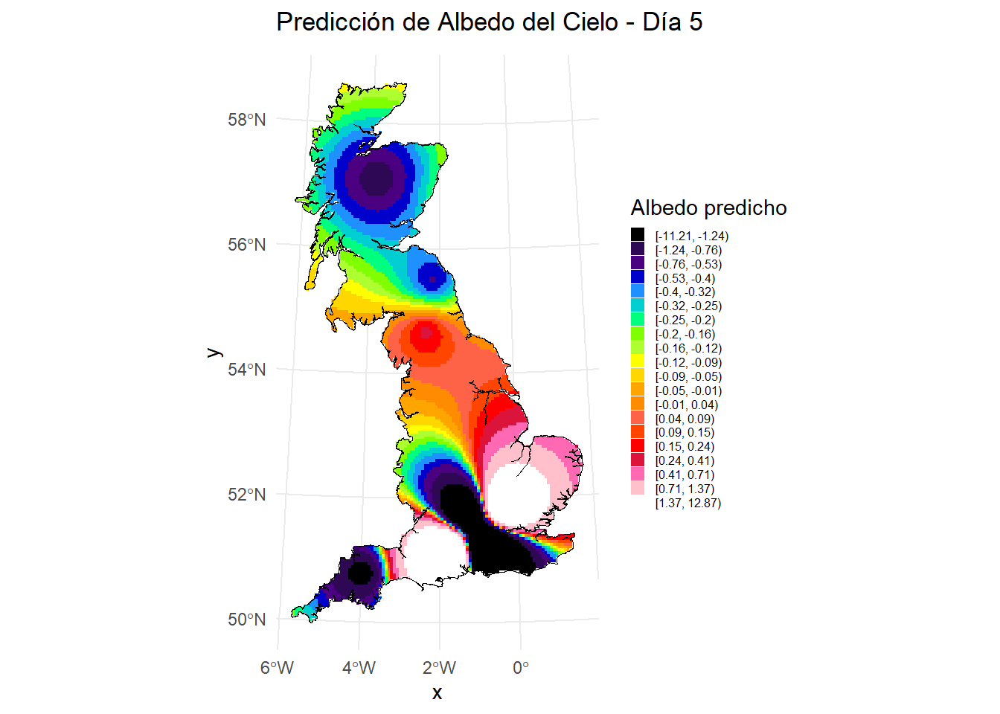
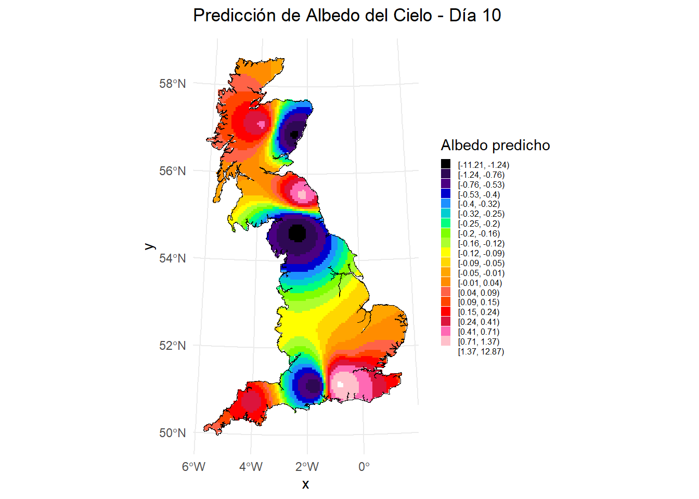
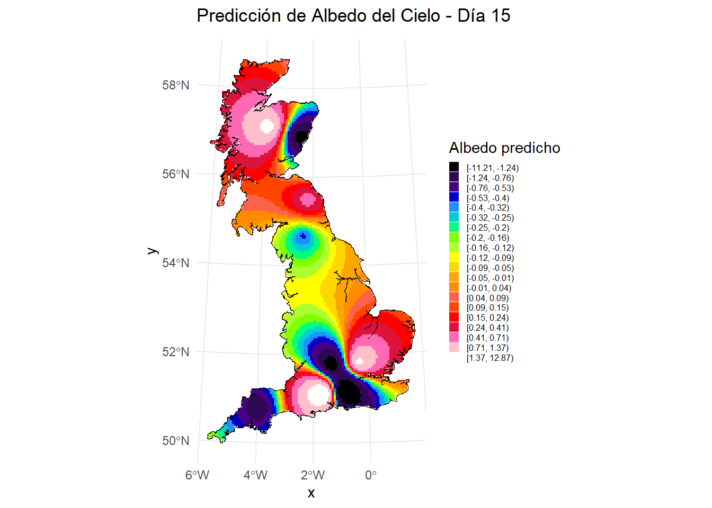
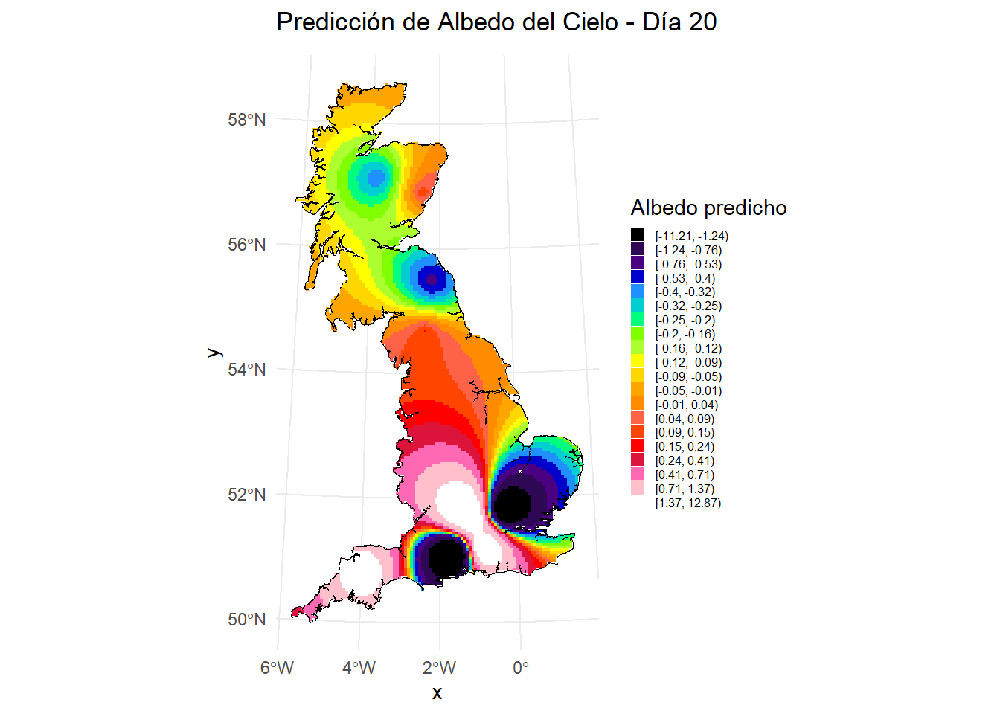
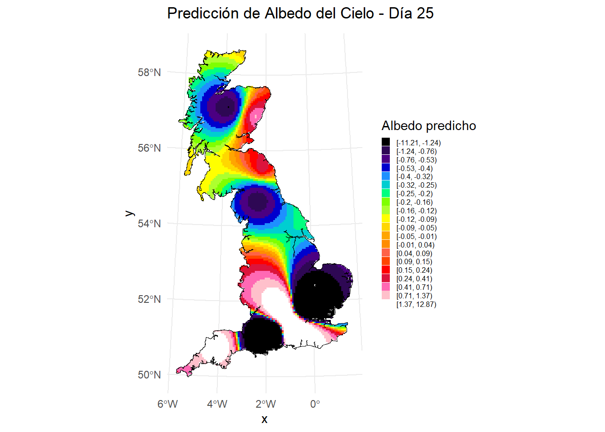
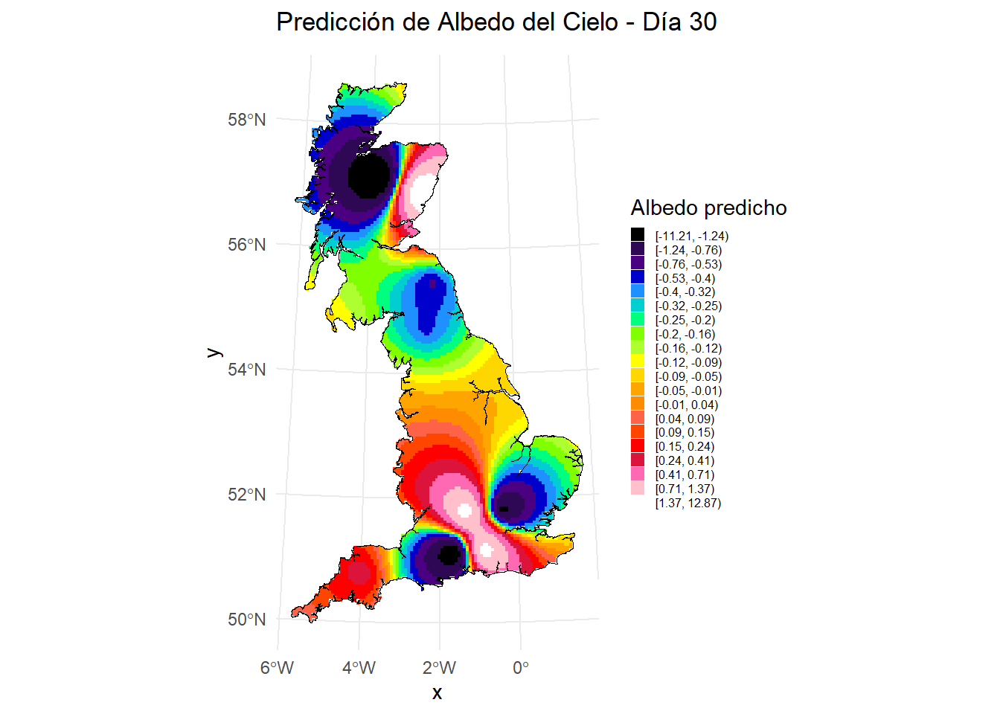
En cuanto a la evolución espacio-temporal:
Día 5: Se observa alta variabilidad regional. La zona sur presenta contrastes fuertes, con comportamientos distintos incluso entre estaciones cercanas.
Día 10: Se evidencia una transición: la región suroriental, que tenía residuos bajos, ahora presenta valores positivos elevados. La región central desciende a valores negativos.
Día 15: El centro muestra una ligera recuperación hacia la media. El noroccidente comienza a destacar con residuos más positivos.
Día 20: Se invierten comportamientos en el suroriental, y el centro se estabiliza alrededor de la media. El nororiente se modera.
Día 25: Persisten valores negativos en el centro y noroccidente, mientras el sur mantiene una mezcla de zonas con residuos tanto positivos como negativos.
Día 30: El patrón se consolida: el noroccidente presenta residuos negativos más marcados, el centro vuelve a estabilizarse, y el suroriental continúa mostrando alta heterogeneidad.
Este comportamiento evidencia la riqueza y complejidad del fenómeno analizado, confirmando la utilidad del cokriging funcional como herramienta para estudiar patrones espacio-temporales de variabilidad más allá de las medias marginales.
Comportamiento Temporal de los Residuos Funcionales en Puntos Específicos
Para complementar el análisis espacial, se seleccionaron cinco ubicaciones distribuidas en distintas zonas del área continental del Reino Unido, con el fin de examinar el comportamiento temporal de los residuos funcionales del albedo del cielo predichos mediante cokriging funcional.
Recordando que los residuos representan la diferencia entre el albedo local y la media global funcional, valores positivos indican mayor albedo del esperado, y valores negativos indican menor albedo del esperado.
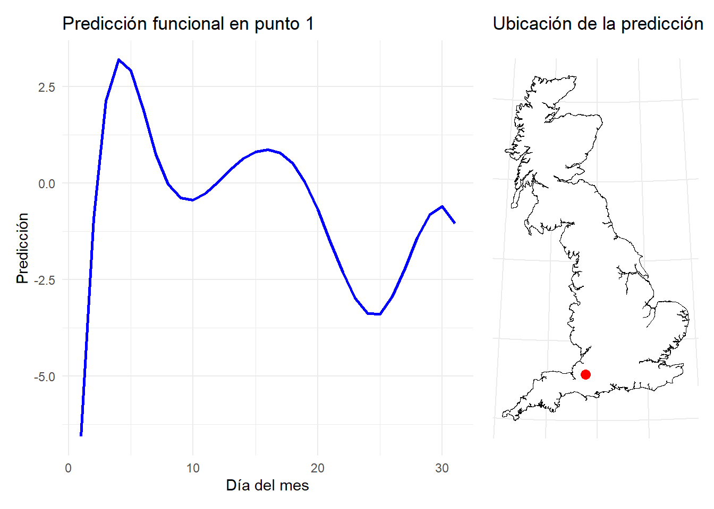
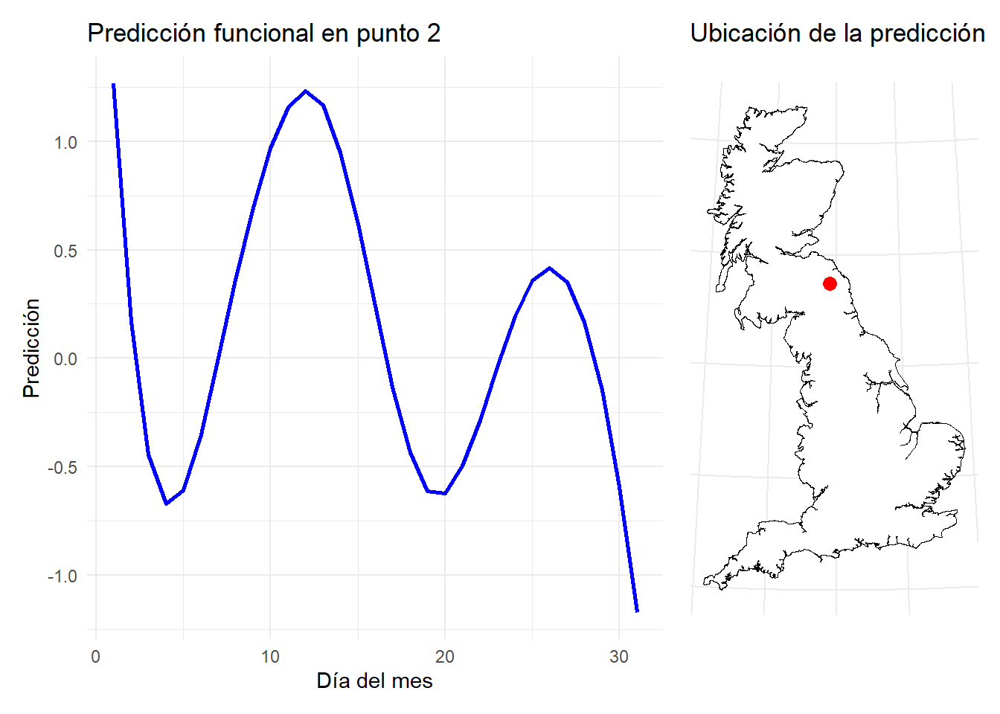
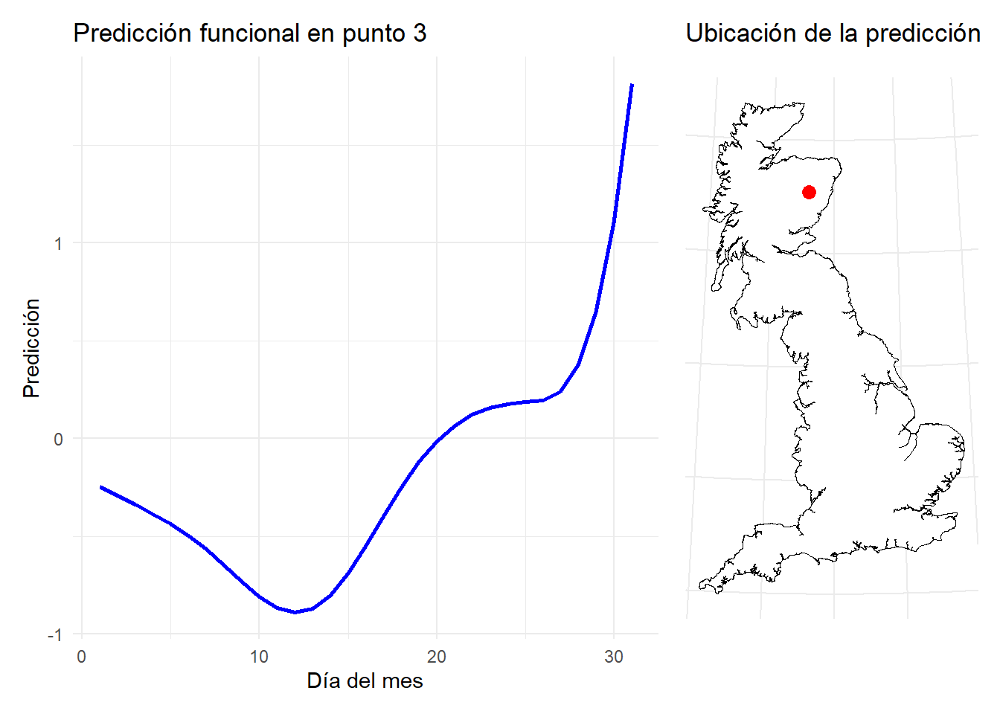
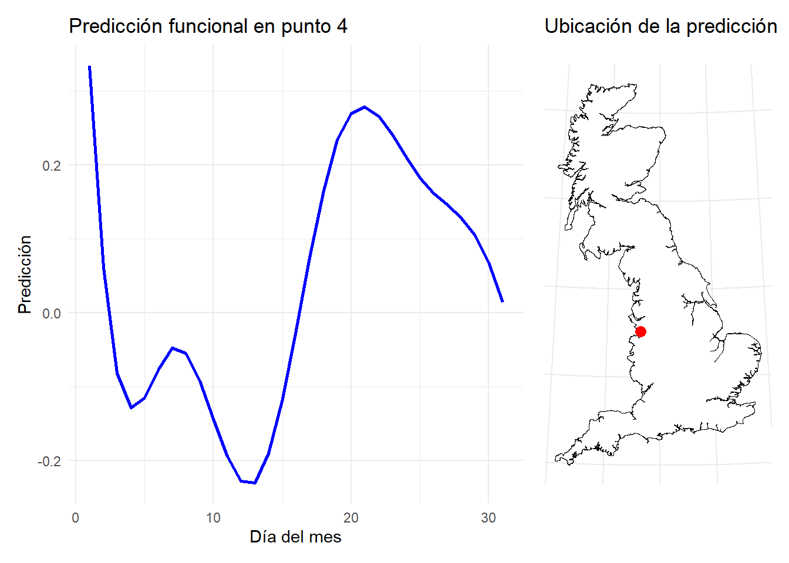
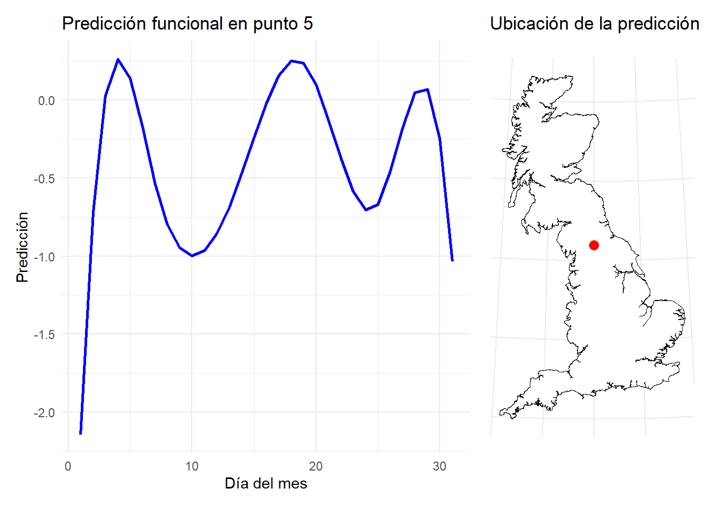
Los resultados fueron los siguientes:
Punto 1 (zona sur): La predicción inicia con un valor muy bajo (alrededor de -6), pero sube rápidamente hasta alcanzar un pico de 2.6 hacia el día 5. Posteriormente, se observa una oscilación descendente que termina estabilizándose hacia el día 30. Este comportamiento sugiere una zona con una variación muy marcada del albedo en los primeros días, que luego tiende a estabilizarse.
Punto 2 (zona continental central): El residuo comienza alto (~1.3), pero cae rápidamente a -0.5 en el día 5. Luego, se presentan fluctuaciones periódicas, alternando entre valles y picos, aunque con amplitud decreciente hacia el final del mes (cerrando en -1.2). Este patrón revela comportamientos funcionales fuertemente oscilatorios pero con tendencia decreciente.
Punto 3 (zona nororiental): Inicia cercano a 0, desciende hasta -1 hacia el día 12, y luego experimenta un ascenso continuo, alcanzando valores positivos cercanos a 2 hacia el día 30. Esto refleja una tendencia creciente sostenida del albedo en esta región.
Punto 4 (centro-sur): Comienza con un valor moderadamente positivo (0.3), desciende gradualmente hasta -0.2 en el día 12, y posteriormente sube hasta 0.3 en el día 20. Hacia el final del mes, la predicción tiende nuevamente a 0. Este comportamiento representa un ciclo de bajada y subida que concluye en estabilización.
Punto 5 (centro urbano): Presenta una predicción inicial extremadamente baja (-2), seguida por un aumento abrupto hacia la media (~0) en los primeros días. Posteriormente, muestra un patrón oscilatorio alrededor de la media, con fluctuaciones entre valores positivos y negativos sin una tendencia clara.
En conjunto, estos cinco casos ilustran la diversidad de comportamientos funcionales del albedo del cielo a lo largo del mes, confirmando que existe una fuerte heterogeneidad temporal en diferentes zonas, incluso en áreas cercanas. Este análisis permite identificar zonas de comportamiento extremo, patrones de oscilación y tendencias crecientes o decrecientes, lo que enriquece la comprensión del fenómeno más allá de lo que permitiría un análisis promedio o estático.
Validación cruzada funcional con métricas por estación y por día
Al evaluar la calidad predictiva del modelo de cokriging funcional, se obtuvo un error cuadrático medio (RMSE) de 85.53 y un error absoluto medio (MAE) de 68.44. Estos valores fueron contrastados con la desviación estándar de los valores reales (85.76), encontrándose que el error de predicción se aproxima bastante a la variabilidad natural de los datos.
Este resultado sugiere que, si bien el modelo logra capturar parte del comportamiento funcional del albedo del cielo, no ofrece una mejora sustancial en comparación con una predicción basada exclusivamente en la media global.
Sin embargo, este comportamiento puede explicarse en buena medida por la configuración del problema: se cuenta con únicamente nueve estaciones de monitoreo distribuidas en una extensión geográfica considerable, lo que limita la capacidad del modelo para captar estructuras espaciales finas. La escasa densidad espacial y la posible heterogeneidad en las condiciones locales (climáticas o de cobertura) hacen que las predicciones estén condicionadas por la distancia a las estaciones más cercanas y su comportamiento promedio.
No obstante, el modelo es capaz de reconstruir adecuadamente la estructura general del fenómeno y proporciona un marco flexible para incorporar información auxiliar (como la radiación neta). En futuras aplicaciones, la inclusión de más estaciones o de covariables adicionales podría potenciar notablemente el desempeño predictivo del enfoque.
CONCLUSIÓN GENERAL
El análisis funcional realizado sobre el albedo del cielo en el Reino Unido, auxiliado por la radiación solar neta mediante técnicas de cokriging funcional, permitió entender no solo el comportamiento temporal de esta variable atmosférica, sino también su variabilidad espacial con respecto a una media global. A través del centrado funcional y la modelación variográfica, se logró caracterizar la dependencia espacio-temporal de las curvas, y con ello, proyectar predicciones a lo largo del territorio.
Los mapas obtenidos cada cinco días revelaron una fuerte variabilidad en el comportamiento del albedo, evidenciando que algunas zonas tienen sistemáticamente valores superiores o inferiores al promedio. Estas diferencias no son aleatorias: reflejan dinámicas locales del clima, de la cobertura de nubes, de los suelos o incluso de patrones de radiación —y por tanto, tienen consecuencias reales en la vida cotidiana, como la percepción de luminosidad o el balance energético superficial.
Aunque los indicadores de calidad como el RMSE y el MAE no mostraron una mejora notable respecto a la desviación estándar de los datos, esto se entiende dentro del contexto del estudio: solo se contaba con nueve estaciones de monitoreo distribuidas en un territorio amplio, lo que limita la capacidad de interpolación espacial del modelo. Aun así, el modelo reproduce con coherencia las tendencias principales y abre la puerta a futuras aplicaciones más finas, donde haya mayor densidad de datos o más variables auxiliares.
En suma, este trabajo demuestra que la estadística funcional no es solo un marco elegante para tratar datos complejos —es una herramienta poderosa para leer la realidad de forma más continua, profunda y precisa. Ver las curvas no como puntos aislados, sino como trayectorias, nos permite entender que los fenómenos ambientales no son fijos ni discretos: se mueven, fluctúan y dialogan entre regiones y días, tal como lo hace el propio clima que nos rodea